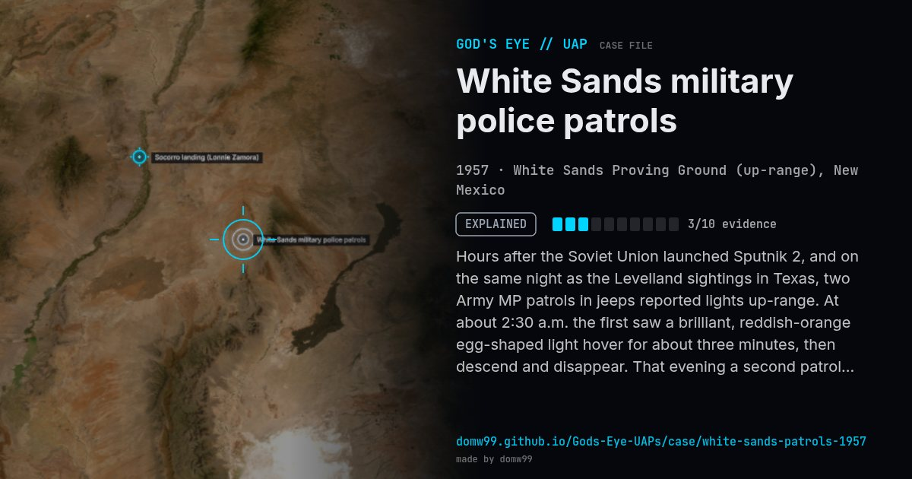

White Sands military police patrols

Hours after the Soviet Union launched Sputnik 2, and on the same night as the Levelland sightings in Texas, two Army MP patrols in jeeps reported lights up-range. At about 2:30 a.m. the first saw a brilliant, reddish-orange egg-shaped light hover for about three minutes, then descend and disappear. That evening a second patrol saw a glowing object that climbed until it looked like a star. The reports reached the newspapers during the November 1957 wave. Air Force investigators found the young soldiers had talked over their sightings before reporting them.
Explanation
Project Blue Book concluded the first patrol saw the half-full Moon through broken cloud, with the drifting cloud creating the apparent motion, and the second saw Venus, then near its greatest brilliance.
What was seen
Shape: Reddish-orange, egg-shaped light
Witnesses: Two U.S. Army military police patrols
Duration: 3 to 25 minutes
Sources
Browse
- United States
- 1950s
- Explained
- Military encounters
- Official government documents
- Military witnesses
- Lights and fireballs
- Spheres and orbs